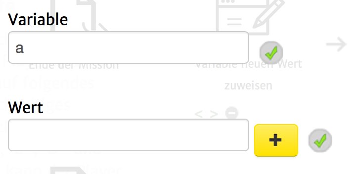

Mit diesem Aktionstyp ist es möglich, einer Variable einen neuen Wert zuzuweisen. Die Variable muss zuvor nicht existieren.
Folgende Einstellungsmöglichkeiten gibt es für diesen Aktionstyp:
|  | Variable: Der Name der als Variable abgespeichert werden soll. Wert: Der Wert, den diese Variable annehmen soll. Hier sind einige Regeln zu beachten, die definieren, was zugewiesen wird: |